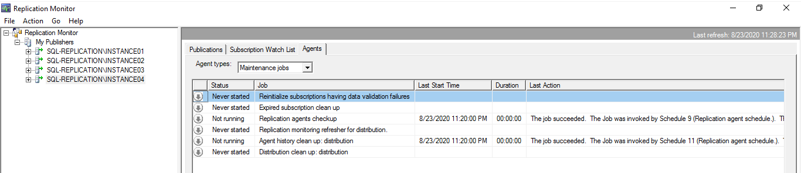
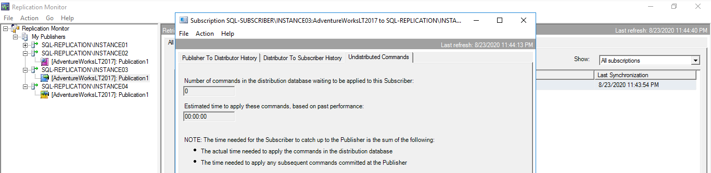

Overview
- A tool that lets you see the health of the components in a replication setup in one convenient place.
- It can provide information on latency, replication history, warnings, and alerts.
- It is not part of SSMS; it is a separate executable named SqlMonitor.exe.
- When it opens, you'll see that the main screen is divided into two windows.
- Left window provides a hierarchical view of the publications associated with each Publisher currently being monitored.
- Right-hand window shows details about the item selected in the left-hand window.
- Click the My Publishers node or the Replication Monitor node in the left-hand window. The right-hand pane will display links to additional information about monitoring replication. You'll also find a link for adding a Publisher to Replication Monitor.
Viewing Information About Publisher
When you select a Publisher in the list on the left, the right-hand window displays details about that Publisher. The information is displayed in what I refer to as the Publisher module, which is separated into three tabs: Publications, Subscription Watch List, and Agents.
Publications
Displays information about all publications defined on the selected Publisher. Note the following columns:
| Synchronizing | Number of subscriptions that are currently actively synchronizing. Value is only meaningful for Merge and Snapshot replication. |
| Current Average Performance andCurrent Worst Performance | Information about the current performance of all subscriptions combined. |
The performance measurement for the last two columns is based on the performance of all subscribers.
- Performance for Transactional Subscriptions is measured only if the performance thresholds have been enabled in the Warnings tab.
- Performance for Merge Publication is displayed only after at least five synchronizations.
Subscriptions Watch List
- The tab displays a list of subscriptions associated with the selected Publisher, based on subscription type.
- Select the subscription type from the drop-down list near the top-left corner of the Subscription Watch List tab to view information about Transactional, Merge, or Snapshot subscriptions.
- The list of columns is different for each type.
- The drop-down list near the top-right corner of the tab allows you to filter your list of subscriptions based on problem areas.
Agents
- Displays information about the replication agents.
- In the Agent Type drop-down list, you can select which types of agents you want to display. The available types include the following:
- Snapshot Agent
- Log Reader Agent
- Queue Reader Agent
- Maintenance Jobs (this list is not an agent. Instead, it covers all the additional maintenance jobs that are created by replication)
- After you make a selection, the window will show all agents (or jobs) of the selected type across all publications on this Publisher. The information displayed for each is dependent on its type. However, for each of them there is a lot of information available. Especially for the Log Reader agents, there is more information displayed here than anywhere else in Replication Monitor, so this should be the first place to check if you think you are having a problem with it.
- For all agent types, you will find at least information about the current status, the last start time, the duration, and the last action performed. In addition, for all selections of the Agent types drop-down list, with the exception of Maintenance Jobs, the tab also displays performance information for the most recent run, as well as counts for transactions and commands processed during the most recent run. The Agent Type drop-down list contains neither the Distribution Agent nor the Merge Agent. Those are subscription-specific agents and are therefore not included in the Publication's Agents tab.

Viewing Information About Snapshot Publications
The information shown in the three tabs for snapshot publications is similar to the information available for Merge Publications. However, because of the simpler architecture of Snapshot Replication, the amount of information available is significantly reduced. For example, the publication module includes no performance information on the All Subscriptions tab, and the only warning available on the Warnings tab is the expiration warning.
Viewing Information About Transactional Publications
- All Subscriptions - It shows a list of all subscriptions associated with the selected publication.
- Performance critical
- Expiring soon / Expired
- Uninitialized subscription
- Tracer Tokens - Displays latency measurements from the Publisher to the Distributor, the Distributor to the Subscriber, and the total latency.
- A special mark that gets inserted into the log file of the publication database.
- Does not change the data in the replicated tables on the Publisher or any Subscriber. However, to the replication agents, this mark looks like a normal transaction. That means it moves through all the standard replication steps, allowing SQL Server to measure the latency between Publisher and Distributor as well as between the Distributor and each Subscriber.
- You can insert a new tracer token into the log by pressing the Insert Tracer button on the Tracer Tokens tab.
- The Tracer Tokens grid displays a single row per Subscriber.
- You can retrieve previous latency measurements by selecting the date and time from the Time inserted drop-down list.
- The date and time in this list represent when the token was inserted into the log.
- If you are unsure whether data is moving, just create a tracer token and in a few seconds you will know. If you regularly use tracer tokens, you can even detect trends such as increasing latency. That can help you identify problems before they become too painful.
- Agents - It displays information about the SQL Server Agent jobs that run the Snapshot Agent and the Log Reader Agent.
- Warnings - It lets you enable warnings and configure their thresholds.
- Expiration warning - If more than the specified percentage of the maximum retention time has passed for a Subscriber, this warning will be displayed for that Subscriber.
- Latency warning - You'll receive a warning when the latency exceeds the specified time limit (in seconds, minutes, or hours).
The Status column indicates the health of the Distribution Agent for this subscription. The column supports the following values: Running, Error, Retrying failed command, and Not Running. There are also three possible warnings that can be included in addition to the status:
For example, you might see a status of Running, Performance critical. The Performance column provides a rough overview of the speed of the Subscriber. You can find the same values here that are used for the Publisher performance. The Latency column specifies the time that it takes for a change to replicate from the Publisher to this Subscriber.
The information includes the job status, the last start time, and the duration of the last execution. The Agents tab also displays information about the last action that was taken by each agent. Information about the Distribution Agents is not included in this tab.
For Transactional Replication, you can specify the thresholds for two warnings.
You can disable either warning by deselecting the Enabled check box associated with the specific warning. The actual warnings are displayed in the Status column on the All Subscriptions tab. A yellow triangle is also tagged onto each level of the Publisher hierarchy in the left-hand window.
Viewing Information about Merge Publications
The publication module displayed for Merge Publications does not include Tracer Tokens tab because Merge Replication doesn't use the Transaction Log.
- All Subscriptions - Shows a list of subscriptions associated with the selected publication. For each subscription, you can see information about its status and performance.
- Performance critical
- Long-running merge
- Expiring soon / Expired
- Uninitialized subscription
- Agents
- Warnings - It lets you configure warning thresholds. The Warnings tab includes five warnings that you can enable and configure for Merge Replication.
- The first warning is displayed when a subscription is about to expire.
- The second and third warnings are displayed when a length of a single synchronization exceeds this threshold. The first of these is specific to dialup connections, and the second is specific to LAN connections; only one of the two is active for any given synchronization, based on the current connection type.
- The last two warnings are displayed when the rate of rows merged per second drops below the threshold set here. In this case, the first of these is specific to LAN connections, and the second to dialup connections.
It contains a row for each subscription associated with the selected Merge Publication. For each row, you can see the current status, connection type, time and duration of the last synchronization, performance-related information, and the delivery rate. The Status column can contain any of the following values: Error, Retrying failed command, Not synchronizing, and Synchronizing. There are also four possible warnings that can be included in addition to the status:
For example, you might see a status of Synchronizing, Performance critical. The Performance column can contain any of the following four values: Excellent, Good, Fair, Poor.
Subscription Details
Everywhere you have a subscription list, you can access more options available to each subscription by right-clicking the subscription (or double-click); this opens a context menu.
In this case, the subscription is a Transactional Subscription associated with a publication. From the context menu, you can start or stop the synchronization process, reinitialize the subscription, or access the subscription's properties or agent profile. In addition, you can click the View Details option to open the Subscription dialog box. The Subscription dialog box for a transactional subscription includes three tabs:
- Publisher To Distributor History
- Distributor To Subscriber History
- Undistributed Commands
- The first two tabs contain information about the last synchronizations.
- The third tab contains information about the number of undistributed commands as well as an estimate for the remaining runtime needed to distribute those commands. The time displayed here is only an estimate.

For a Merge Subscription, the Subscription dialog box contains only a single tab, Synchronization History, which displays information about the last synchronizations. For each Merge Synchronization, you can display detailed statistical information in the bottom half of the dialog box by selecting that synchronization in the list. If you have a lot of synchronizations, the drop-down list at the top of the window can help narrow down the list of synchronizations. The default is to show the last 100 synchronizations. For a Snapshot Subscription, the Subscription dialog box also contains only a single tab, the "Distributor To Subscriber" History tab.
Alerts
- When you enable a warning on a publication's Warnings tab, a yellow triangle is displayed when one of the Subscribers exceeds the set threshold. By default, no additional action is taken. However, you can also set up a SQL Server alert so that SQL Server notifies you if that threshold has been exceeded.
- Replication supports several predefined alerts that you can utilize. You can set up the alerts directly in SSMS or on the Warnings tab of Replication Monitor, which is a much simpler process. You can see that the Warnings tab includes the Configure Alerts button. When you click that button, the Configure Replication Alerts dialog box appears.
- To configure an alert, select it from the list and then click the Configure button. This launches a standard alert properties dialog box, prefilled with the information needed for the selected alert. You can use this form to specify what SQL Server should do, and who should be notified when the alert fires.
Adding a Publisher
If you started Replication Monitor by using the context menu of a Publisher in SSMS, the Publisher is listed automatically. However, you can connect to additional Publishers within Replication Monitor or reconnect previously removed Publishers.
- In Replication Monitor's left-hand window, right-click the Replication Monitor node, and then click Add Publisher.
- When the Add Publisher dialog box appears, click the Add button, and then click Add SQL Server Publisher.
- When the Connect to Server dialog box appears, provide the necessary connection information. Once you've entered the necessary information, click Connect. If the connection is successful, a message box appears. It lets us know that, in order to monitor a Publisher, it needs to connect, not only to that Publisher, but also to the Distributor.
- When you click OK to close the message box, another Connect to Server dialog box appears, with your publication's Distributor preselected. Provide the necessary credentials and click Connect. You will be returned to the Add Publisher dialog box. It should now list your Publisher and Distributor in the Start monitoring the following Publisher(s) section. Next, provide a group under which the Publisher will be listed in Replication Monitor. The bottom half of the Add Publisher dialog box lists all groups that are currently defined. Click New Group to create a one. This launches the New Group dialog box.
- Type a name in the text box, and then click OK. This will add the new group to the list of groups and automatically select it. If you have multiple groups listed here, make sure the new one is selected. The last thing you need to set is the refresh interval. It determines how often information about the Publisher is collected from the Publisher as well as the Distributor. The default value of 10 seconds is usually a good choice.
- Click OK again to close the Add Publisher dialog box. Replication Monitor's left-hand window should again list the Publisher.
Note that you cannot do sub-groups, nor can you create more than one connection to a Publisher at a time.
Removing a Publisher
In the left window of Replication Monitor, you can remove individual Publishers from the list. This does not change any data on the Publisher itself; it just stops showing information about this Publisher in Replication Monitor.
- Right-click the Publisher you want to remove, and then click Remove. Click "Yes" when prompted to confirm whether you want to remove the selected Publisher.
- Repeat the same steps for the My Publishers node. This is possible only if there are no more Publishers listed under this node. Note that the node is referred to as a group and is used to organize your Publishers.